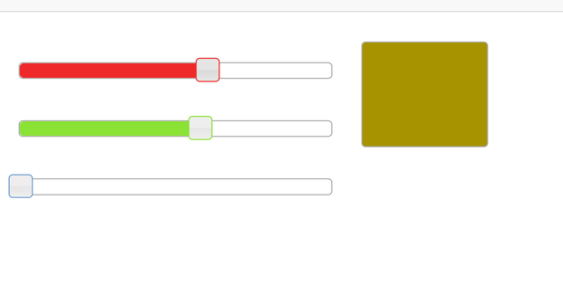

Demo 1
Control R G B LED
Generating Light
“And the light shineth in darkness; and the darkness comprehended it not.” John1:5,KJV
LED structure
“An LED [...] is a "p–n junction diode", which emits light when activated.” ~ Wikipedia
LED: Light Emitting Diode
An LED has direction in life
Anode: + (positive, "Vcc")
Cathode: - (minus, "GND")
RGB LED
-
R
G
B - three separate LEDs
- Red
- Green
- Blue
- LED: Light Emitting Diode
RGB LED (common anode)
| Lead | Label |
|---|---|
| 2 | + Anode (Longest) |

What does "Common Anode" mean?

Wiring RGB LED
Header Pinout - Marked

Online Link
Wiring RGB LED - View

Header Pinout - Marked

Online Link
Wiring RGB LED - Breadboard

Wiring RGB LED - Photo

Web Interface
